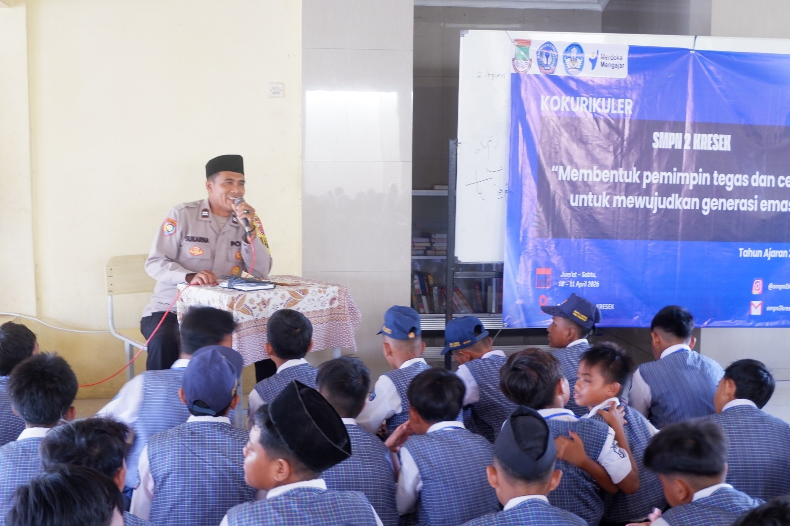

Kegiatan Kokurikuler 2026
10 April 2026


×
 ❮
❯
❮
❯
SMPN 2 Kresek menyelenggarakan kegiatan kokurikuler dengan tema “Membentuk Pemimpin Tegas dan Cerdas untuk Mewujudkan Generasi Emas”.
Kegiatan ini dilaksanakan pada tanggal 10–11 April 2026 di lingkungan SMPN 2 Kresek dan diikuti oleh seluruh siswa/siswi kelas 7 dengan penuh semangat dan antusias.
Melalui kegiatan ini, diharapkan siswa dapat mengembangkan karakter kepemimpinan, kedisiplinan, serta kemampuan berpikir kritis dan bertanggung jawab dalam kehidupan sehari-hari.
← Kembali